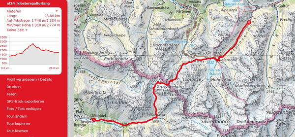
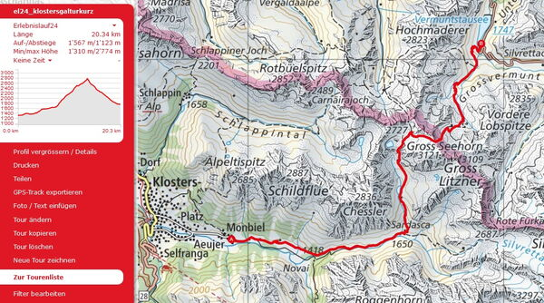
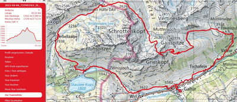
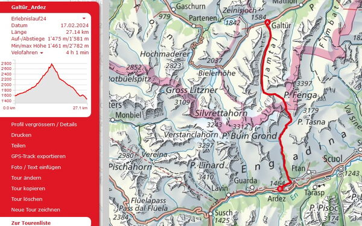

Erlebnislauf 3 Tage
Vom 23. bis 25. August laufen wir in 3 Tagen auf herrlichen Trails
Klosters - Galtür - Teilnahme beim Ferwall Plauschlauf - Ardez
Wir laufen in 3 Gruppen nach Stärkeklassen. Trailrunning im Wohlfühlbereich. Das Tempo passen wir dem Gelände an und geniessen dabei die schöne Landschaft. Wir haben auch Zeit um Pausen einzulegen. Ist das Gelände eben oder sogar abfallend so sind wir im Laufschritt unterwegs. Steilere Aufwärtspassagen werden auch in zügigem Wanderschritt bewältigt.
Wir logieren im Hotel Alpenresort Fluchthorn**** in Galtür und geniessen die Vorzüge dieser ausgesuchten Hotelunterkunft mit grosszügigen Räumlichkeiten und feiner regionalen Küche. Am Abend geniessen wir ein 3-Gang Menu und am Morgen ein ausgewogenes, sportlergerechtes Frühstück.
Klosters - Galtür

Freitag, 23. August
Klosters, Monbiel - Seetal - Seelücke - Bielerhöhe
29 Km +1700 /- 1300 hm Daten.gpx / zur Strecke auf SchweizMobil
Wir treffen uns um 08.00 Uhr beim Bahnhofplatz Landquart. Das Gepäck wird verladen und nach Galtür transportiert. Um 8.17 Uhr fahren wir mit der Rhätischen Bahn nach Klosters Platz, Umsteigen auf den Bus nach Monbiel zum Startpunkt. Nach der Gruppeneinteilung laufen wir los in Richtung Sardasca, weiter das Seetal hoch und über die Seelücke wo wir die Landesgrenze verlassen. Abstieg an der Saarbrückerhütte DAV vorbei und runter bis zum Silvretta Stausee bei Bielerhöhe. Ab Bielerhöhe gibt es die Möglichkeit mit dem Bus nach Galtür zu fahren oder weiter in Richtung Galtür zu laufen bis zur Haltestelle Zahlstelle und mit Bus nach Galtür. Die folgenden 2 Nächte verbringen wir im Alpenresort Hotel Fluchthorn**** inklussive Nachtessen und Frühstück. Die Tour für den Folgetag wird nach dem Abendessen besprochen.
Klosters - Galtür verkürzte Tour

Freitag, 23. August verkürzte Tour
Klosters, Monbiel - Seetal - Seelücke - Vermunt Stausee
20 Km +1500 /- 1100 hm Daten.gpx / zur Strecke auf SchweizMobil
Gleiche Streck bis zur Saarbrückerhütte, dann zum Vermuntstausee und mit dem Bus hoch zur Bieler Höhe und weiter nach Galtür.
Galtür Silvretta-Ferwall

Samstag, 24. August
In Galtür findet der Silvretta Ferwall Marsch / Erlebnislauf statt. Wir laufen in Gruppen die jeweils gewünschte Strecke Silvretta 19,2 Km / Ferwall 32,7 Km. Wähle deine Strecke aus und wir laufen gemeinsam in Gruppen die schöne Route. Auf der Strecke erhalten wir Zwischenverpflegungen und zudem ein Funktionsshirt. Das Gruppenerlebnis und die schönen Aussichten gibt es obendrauf. (Infos zum Ferwall-Marsch) Die Anmeldung und Startgeld beim Ferwall-Marsch/Erlebnislauf erfolgt durch alpinrunner.ch und ist bereits inkussive.
Galtür - Ardez

Sonntag, 25. August
Galtür - Jamtal - Jamtalhütte - Fütschölpass - Val Tasna - Ardez
27 Km +1400 hm / -1600 hm Daten.gpx / zur Strecke auf SchweizMobil
Nach dem Frühstück rüsten wir unser Gepäck zum Transport bereit das nach Ardez geführt wird. Wir starten zur dritten Etappe die uns das Jamtal hoch führt, vorbei an der Jamtalhütte DAV zum Futschölpass auf 2780 m.ü.M. wo wir die Schweizergrenze erreichen. Der Abstieg ins Engadin führt uns ins Val Durschai und dann ins Val Tasna das uns nach Ardez führt. Ein Abschluss z'Vieri erwartet uns in Ardez im Schortas Alvetern. Für die Rückfahrt nach Landquart zum Ausganspunkt des Erlebnislaufes sind die Plätze in der Rhätischen Bahn reserviert, sodass wir um 18.13 Uhr in Landquart eintreffen werden.
Laufleiter begleiten euch


Laufleiter Erlebnislauf
- Marco Jäger, Chur
- Petra Jäger, Chur
- Joschi Furrer, Zug
- Brigitte Eggerling, Chur
- Michi Gisler, Bonaduz
- Iris Capatt, Chur
- Martin Lädi Ledermann, Chur
- Sven Peverelli, Chur
angemeldete Teilnehmer
- Samstag- Silvretta 19 Km / Ferwall 32 Km
- Sebastian Reich 32
- Ursula Baer 32
- Barbara Miller 32
- Verena Iseli 32
- Irene Breitmaier 32
- Adrian Dörig 32
- Dani Ulrich 32
- Peter Hug 32
- Michel Calonder 32
- Urs Ullmann 19
- Katharina Habermacher 19
- Micheline Pang 19
- Thea Günthardt 19
- Bruno Günthardt 19
- Monica Hug 19
- Bea Hernach 19
- Chrigel Hernach 19
- Nartano Kottmann 19
- Jean-Marie Zogg 19
- Markus Benz19
- Jörg Roncoletto 19